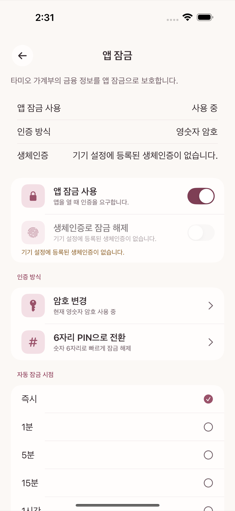

Turn on Use App Lock on the App Lock screen in Settings and the app asks you to authenticate every time you open it.

Tameio keeps all ledger data in local storage on the device only. It does not sync to a server in real time, and it does not track you for usage analytics or advertising. There are exactly two cases where the app talks to the outside world.
Receipt OCR also runs on the device, not on a server (see chapter 9). Unless you delete the app or reset it, your data exists only on the device and in backup files you have made yourself.
For more detail, see Privacy Policy in Settings (an external link). Wherever you open this link in the app, it always leads to the same public document.
App Lock setup and the authentication methods are no different on iPad and Mac than on iPhone — you use a PIN or password, plus whichever biometric the device supports (Face ID, Touch ID, or Optic ID). There is no platform-specific restriction such as "this device supports passwords only".